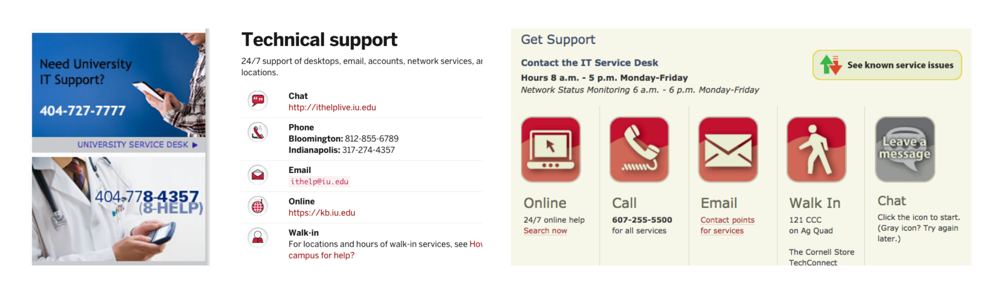

UC Davis IT Service Catalog
Problem
UC Davis lacked a centralized service catalog where clients (students/faculty/staff) could browse the university’s portfolio of IT services. Many of these services were owned by different departments in the IT organization, so information about these services was dispersed across several different sources.
Solution
Create a service catalog where students, faculty, and staff can easily look up any IT service by category.
Research
I first conducted a competitive analysis of 9 university service catalogs to identify design patterns across catalogs.
- What were common catalog features?
- What design elements encouraged users to browse the catalog?
- What techniques were used to reassure less tech-savvy visitors?
Once I gained a better sense of the user needs that service catalogs addressed, I created 23 client scenarios and re-evaluated each catalog on how well it resolved those scenarios, compiling the data in a spreadsheet.
I also formulated a UX rubric that I used to evaluate each catalog.
I then compiled a report detailing the strengths and weaknesses of each service catalog.
Some of the strengths included:
- Navigational consistency
- Visual prominence of IT Support/Help Desk
Some of the weakenesses included:
- Inconsistent icon design styles
- Jargon-heavy service descriptions
- Crucial links embedded in walls of text
One of the core challenges of creating a service catalog is defining the taxonomy. Service catalogs typically group services into categories, but those categories aren’t always clear-cut. For example, would clients seeking teleconference services click the Email & Collaboration category, or the Voice Communications category?
I collected data on category names to help our organization come up with categories that would best accommodate our portfolio of services.
Lastly, I led a student focus group to gain insight on students’ IT needs, and how best to address them.
Strategy
Based on my research, I created a UX style reference to guide the design of UCD’s service catalog. The reference included pointers on icon design, inter-element whitespace, navigational consistency, and visual hierarchy.
I also began categorizing UCD’s IT services into tentative categories.
Design
I first sketched out layout ideas for the service catalog home page, and after a few feedback iterations, began creating higher-fidelity wireframes.

One of the key design decisions was to combine identity-based interaction and need-based interaction on the home page.
- Identity-based interaction: user specifies whether he/she is a student, faculty, staff, etc.
- Need-based interaction: user specifies the category of services that fits his/her need.
Combining these two interaction techniques personalizes and expedites the user experience.